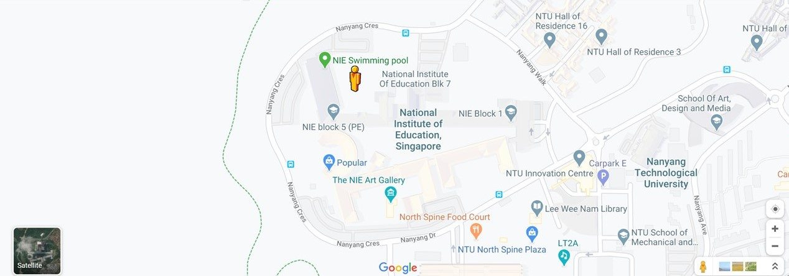

Hockey Pitch

H O C K E Y
P I T C H
Description
Material: Synthetic Field
Size: 91.40m(100 yard) X 55.0m(60yard)
Goalposts: 4 Small + 2 Large Goal Posts
Facilities Offered: PE Storeroom 2
The hockey pitch is used by Physical Education teacher trainees for many different purposes.
The pitch is used to conduct our Physical Education Sports modules,
such as Soccer, Softball, Hockey, etc and even used by the PESS Club to conduct Sports Carnivals!
The hockey pitch lies in the center of the Sports Block and beside the NIE Swimming Pool.
When the hockey pitch is in use for class or recreational purposes, the atmosphere of the block would be lifted,
as one would not help but be intrigued by the games played in field.
A C T I V I T I E S
These are some activities that you can try out in the hockey pitch!
If you do not have your own equipment, softball bats and gloves, don't worry!
There are cones, markers and many other equipment in PE Storeroom 2.
All you need to do is visit the PE Facilities Room to request for the equipment!
